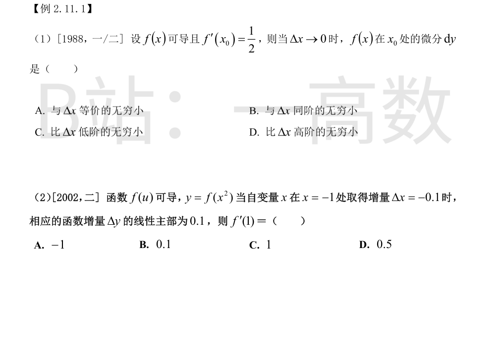
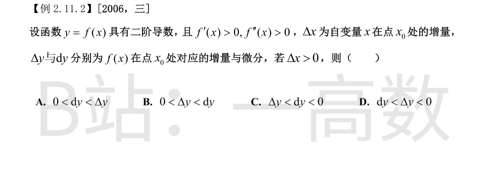

由微分定义，$f(x)$ 在 $x_0$ 处的微分为
$$dy = f'(x_0)\,\Delta x = \frac{1}{2}\Delta x.$$
考察与 $\Delta x$ 的比值：
$$\lim_{\Delta x\to 0}\frac{dy}{\Delta x}=\lim_{\Delta x\to 0}\frac{\frac{1}{2}\Delta x}{\Delta x}=\frac{1}{2}.$$
极限为有限非零常数，且不等于 1，故 $dy$ 与 $\Delta x$ 是**同阶**无穷小（但不等价）。
- 若极限为 1 才是等价（A 错）；
- 极限为 0 是高阶（D 错）；
- 极限为 $\infty$ 是低阶（C 错）。
故选 **B**。
函数增量 $\Delta y$ 的线性主部即微分 $dy$。
由复合函数求导：
$$y' = f'(x^2)\cdot 2x.$$
在 $x=-1$ 处，取 $dx=\Delta x=-0.1$：
$$dy = f'(x^2)\cdot 2x \,dx \Big|_{x=-1,\,dx=-0.1} = f'(1)\cdot 2\cdot(-1)\cdot(-0.1) = 0.2\,f'(1).$$
由题设线性主部为 $0.1$：
$$0.2\,f'(1)=0.1 \implies f'(1)=0.5.$$
故选 **D**。

**判断符号。** 微分
$$dy = f'(x_0)\,\Delta x > 0 \qquad (f'(x_0)>0,\ \Delta x>0).$$
**比较 Δy 与 dy。** 由拉格朗日中值定理的泰勒展开（一阶带拉格朗日余项）：存在 $\xi$ 介于 $x_0$ 与 $x_0+\Delta x$ 之间，使
$$\Delta y = f(x_0+\Delta x)-f(x_0) = f'(x_0)\,\Delta x + \frac{f''(\xi)}{2}(\Delta x)^2 = dy + \frac{f''(\xi)}{2}(\Delta x)^2.$$
因 $f''(x)>0$ 且 $(\Delta x)^2>0$，余项
$$\frac{f''(\xi)}{2}(\Delta x)^2 > 0,$$
故
$$\Delta y > dy > 0, \quad\text{即}\quad 0 < dy < \Delta y.$$
**几何解释**：$f''>0$ 说明曲线严格下凸（凹弧），切线在曲线下方，故曲线的真实增量 $\Delta y$ 大于切线增量 $dy$。
故选 **A**。